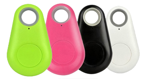
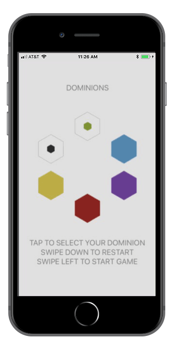

The internet has gotten pretty wild in recent years, so I'm keeping this simple 😉
Frontend - my main focus. I'm an expert in web basics, well-versed in React, familiar with Angular & other popular UI libraries. I am obsessed with end-user experience and cannot rest until my interfaces are smoothly responsive and polished.
Simflora
Inoculus
Backend - although I love keeping the user in mind, I have a track record of working adeptly across the stack
Glamajson
I've also contributed to and maintained extensive backend systems in each of my positions, to less visually demonstrable effect. I've built out endpoints that are tightly-coupled to UI features in Node.js. Built and maintained automated processes for data-reporting and templated emails. I have fixed bugs and maintained performance & reliability of complex data services within a Ruby on Rails monolith. On top of building endpoints I have also contributed to and integrated with middleware services for data management between numerous third-party APIs, primarily in javascript.
Mobile - my smallest exposure thus far, would love more opportunities in this domain
Eraseer


Passion Projects - bringing together web, hardware, art & design with an emphasis on broad spectral expression & impactful experiences
The Space Above - Custom lighting build with thematic programming for a dance show
Orfeo - completed as a capstone project for my Bachelor's degree and shipped off to Burning Man in 2015, never to be recovered 🥲
Orfeo Prototype - featuring a topographic motif that I designed as a tile-pattern and used for other digital and print projects